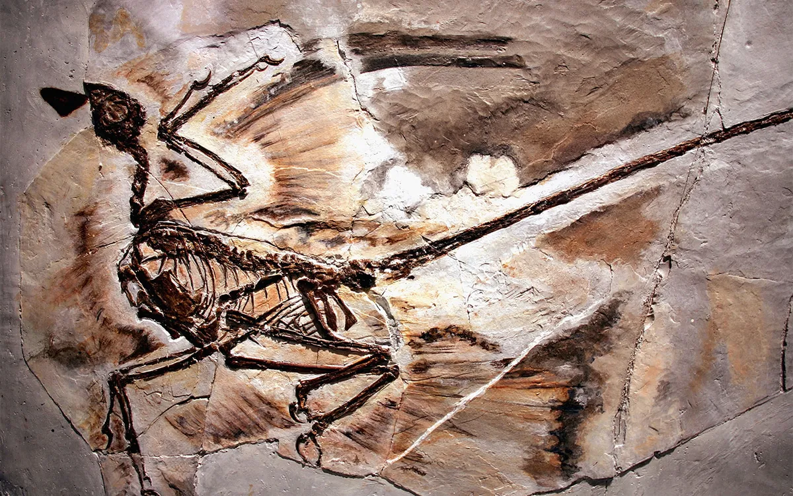
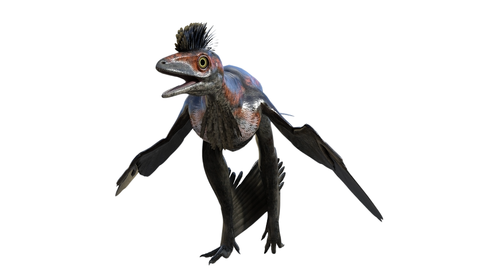

Genus: Microraptor
Species: zhaoianus, hanqingi, gui
Family: Dromaeosauridae
Order: Saurischia, Elpistostegalia
Class: Reptiles, Lobe-finned fish
Phylum: Chordata
Kingdom: Animalia
Size Range
The size range of a Microraptor was around 2.5 to 3.1 feet long and they were around a foot tall. To put that in perspective, the average Human baby is about 8 inches taller than the Microraptor. With its small size, the Microraptor can easily escape predators.
Habitat
The Microraptor’s habitat was in the forests of China. Specifically, these Dinosaurs lived near many bodies of water in these forests. The reason why they lived in these forests was because they could glide across trees with there wings since they could not fly.
3D Render of a Microraptor's Habitat

3D Render of a Microraptor
First Discovery
The first discovery of the Microraptor happened sometime in 1998 in China.
Time Period
The time period in which the Microraptor lived was around 120 million to 125 million years ago. This time was during the Cretaceous period. The Cretaceous period housed many infamous dinosaurs like the Tyrannosaurus Rex or the Triceratops.
Feeding and Diet
Their diet was purely carnivorous. They were hardly picky eaters, their diet consisted of fish, birds, lizards, and even small mammals even though they themselves were almost the size of one.
Behaviors and Adaptations
Their behaviors were quite predictable. They were fast, ran on two legs, and their feet were structured specifically for grasping the branches of trees. Their wings were not for flying but for gliding across trees.
Predators
The Microraptor’s main predator was the Jidapterus. It’s body and shape is comparable to a Pterodactyl but its wings are small and its head is really big.
Fossil Description
The Microraptor fossils were found with impressions of feathers and wings which made it possible to get the dimensions and size of the Microraptor.
Fossil Record
The only fossils that have been found of the microraptor were in China. Specifically they were found in Hebei, China, inner Mongolia, and Liaoning, China.
 3D Render of a Microraptor's Habitat
3D Render of a Microraptor's Habitat